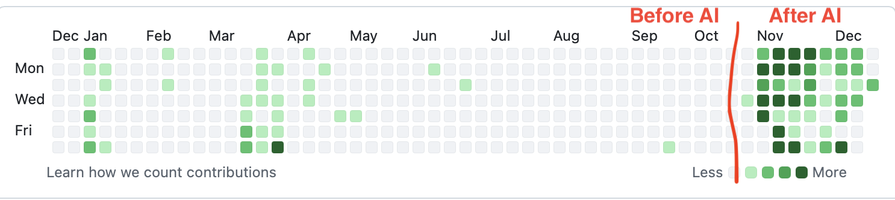

I have built more stuff in the last two months of this year than ever before. I’m saying “built” and not “coded” because I have used AI, but still. Here is how my Github activity looks like for this year:
Since the beginning of November I have:
- Updated my website generator to include topics and use templates
- Set up Github Actions to publish to the web on commit
- Updated my public transport widget with a map picker and a bunch of other features
- Set up Fastlane and Github Actions to publish to Testflight on commit
- Created the pizza calculator I’ve been thinking about for years (and discovered there are a hundred similar ones)
- Created flashcards to help my son practice for a biology and chemistry test (in Finnish)
- Created a prototype of a photo-based meal tracker that uses an LLM to rate meals and calculate calories
And I’ve been “creating” something every day! For years I struggled to follow the “don’t break the chain” principle, but now it came naturally. I feel bad if I don’t push any code in a given day.
But have I learned anything? I couldn’t code on my own the things I’ve built without weeks of reading, and even then probably wouldn’t do it as well as the LLM does it in a few minutes. But I have seen what’s possible and have a much better idea of what direction to take should I need to do this by myself. Also, I have learned how to work with an LLM.
My Linkedin and Hacker News feeds are full of people reporting on LLM usage, some skeptically and some enthusiastically. It was really crucial to try it on my own and make my own judgment, because the discussion is heavily polarised. While I haven’t learned anything that hasn’t been said already, I can attest that the following is true:
- You need to know what the LLM is doing, at least to an extent. Sometimes the agent struggles with simple bugs and will create an overly complicated solution to work around them
- Use plan mode to validate the agent’s plan. To be honest I always confirm it without changes, but it’s reassuring to see where things will be going. Also, Claude (which has been my coding agent of choice) asks clarifying questions that are very useful
- Build at least two things in parallel. Since adding features it’s so easy, it’s hard to resist the temptation even when a project is almost finished. It helps to start a new one before the first one is done, to satisfy that urge and leave the mature project alone.
- Start over often. Sometimes, especially after a long session, the agent tends to spin out of control and do weirder and weirder things. It’s useful to start over and do a little piece at a time.
- The whole thing can become quite expensive quite quickly!
There is more, but these are the main lessons. But the most important thing is that I’ve been having a lot of fun! I feel like agentic coding is perfect for someone like me, who has a basic idea of what they want and how to do it, but is slowed down by lack of experience. I can see how an experienced programmer might diss these tools or would want to carefully review everything they do. And I definitely wouldn’t submit AI-generated code to my colleagues for review. But for solo projects, it is just amazing. I feel like my head has been untapped and all the ideas I've had over the years are finally flowing out. And more are coming all the time!
I hope to keep up the streak in the new year and publish something useful to the app store. What a time to be alive!